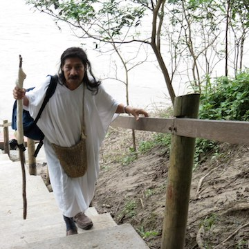

ЧАНКИН ТРЕТИЙ
ШАМАН ПЛЕМЕНИ ЛАКАНДОНОВ. ПАЛЕНКЕ
Этого не могло со мной случиться наяву. Мозг устал анализировать увиденное, услышанное здесь, в Паленке, и сдался, наконец. позволив происходить тому, что происходит.
Прямо передо мной возник шаман. В том, что это шаман, не было никакого сомнения. Он стоял на ступенях пирамиды Пакаля, опираясь на посох, украшенный камнями и ленточками, одетый в тунику из коры дерева. Ветер шевелил прямые длинные черные волосы на, по-индейски, гордо поднятой голове. Секунду назад его здесь не было! Муж толкнул меня локтем в бок - Видишь?
Он спустился вниз легко и мягко присел на траву.
- Я — Чанкин Третий, сын Чанкина Вьехо, великого Чанкина из племени лакандонов, - сказал он. А о вас мне говорил племянник, Каюм. Я «смотрел» вас три дня назад. Хорошо, что вы пришли.
Я увидела его глаза, удлиненные, оленьи. Мягкость и тепло исходили от него. Захотелось плакать. Хотелось его обнять и не двинаться... Было неуютно, неловко от этого чувства, я не знала, что сказать.
- Идемте, я покажу вам храм. - Чанкин встал, вернее, вспорхнул, и быстрым шагом пошел впереди нас.
Говоря о Мексике, наших экспедициях и приключениях, пытаюсь уйти от «сказочно-былинного» стиля. Но что же делать, когда все это — сказка или фантастический фильм? Буду писать, как поется...
Мы спустились по тропинке вниз, в сельву. Чанкин оглядывался, быстрым взглядом смотрел вокруг, потом на нас. Шли молча. Я пыхтела от жары, от сваливающихся с ног тапочек и пыталась не отставать. Хотелось спросить сколько нам еще идти, но не решалась. Шли минут двадцать, не видно было ни храма, ни стен, только сельва стала более высокой, а земля краснее и более скользкой. Сельва пела, жужжала, кричали обезьяны и еще какие-то животные, о которых не хотелось задумываться... Было очень влажно и жарко.
Чанкин остановился, мы подошли, запыхавшиеся, он же дышал ровно, только капельки пота появились на лбу. По-прежнему не видно было никаких развалин. Мы сели на большое упавшее дерево, он достал из сумки, такой же деревянной, как его туника, саумадор, окуриватель, угли и молча принялся их разжигать. Наверное, пришли.
Чанкин заговорил тихим грудным голосом. Он говорил о том, почему мы здесь, о своем видении, в котором были мы с мужем, о том, что он хотел нам сказать о нашем предназаначении. Все это я еще должна обдумать и найти этому место в жизни... Может быть, потом напишу.
Мы слушали рассказ о великом Чанкине Вьехо, вожде племени лакандонов, ветви Майя, так и не вышедшей из джунглей к испанцам, поэтому они и выжили, сохранили нетронутыми свои обычаи и язык, спасли своих людей. Именно при Чанкине Вьехо произошел первый контакт с цивилизованным миром, было это в 40-х годах 20 века, до этого времени племя лакандонов считалось вымершим. Лакандоны называют себя людьми — деревьями, частью сельвы и так оно, по-видимому, и есть.
Чанкин отличался от всех, кого мы знали ранее . Было в нем на самом деле что-то от диковинного дерева. Узловатые конечности с тонкими аристократическими, но цепкими пальцами, лицо и руки в мелкую морщинку-сеточку, очень напоминавшие тонкую коричневую кору. И, если бы он вдруг окаменел, нет, одеревенел, не было бы ничего удивительного.
Он рассказывал о том, как его племя было частью царства царя Пакаля, о Красной Королеве, по данным лакандонов, - матери Пакаля. Ученые спорят на эту тему, не удосужившись поговорить с индейцами, послушать их легенды, наверное. Говорил о длинных походах с отцом в Паленке, в Яшчилан, в Тонина — святые места индейцев, о сокровищах Майя, подземных ходах, деревянных подвесных мостах и водопадах, о местах силы. Очень хотелось пить, и это было неважно, хотелось, чтобы он не прекращал рассказывать. Но он встал и начал какой-то лопаткой, похожей на детский совочек, раздвигать корни невдалеке от того места, где мы сидели. Непонятно было, как раздвинулись кусты, но открылся ход, похожин на каменный погреб со ступенями.
Он достал фонарь и пригласил нас спускаться за ним. Мы оказались в круглой комнате, вокруг стояли саумадоры с копалем и какими-то предметами, по-видимому, приношениями, оставленными Богам. Дышалось легко, было свежо и прохладно. Огонь в саумадоре горел, Чанкин задул его, положил копаль и начал петь. Пел долго. Мне показалось, что мы заснули, а когда проснулись, он все пел...
Он сказал, что отсюда можно добраться до гробницы Пакаля, есть несколько таких ходов, связанных с гробницей.
- Я представил вас моим Духам, царю Пакалю. Приводите своих людей. Они допустили.
Назад мы шли другой дорогой. Молчали. Показалось, что этот путь был намного короче. Расстались у входа в Паленке, обнявшись.
Мы встретились с Чанкином в сентябре, когда из России и Нью Йорка приехала большая группа людей с миссией объединения Севера с Югом, Орла с Кондором. Это уже другой рассказ.
Имя Чанкин с языка Майя переводится как Маленькое Солнце. Так и горит оно в моем сердце, маленькое солнце, зажженное Чанкином, человеком-деревом, шаманом из потерянного племени лакандонов.
Я скучаю по тебе, Чанкин.
SHAMAN DE MI VIDA,
SHAMAN DE MI ALMA,
SHAMAN, BIENVENIDO, SHAMAN...